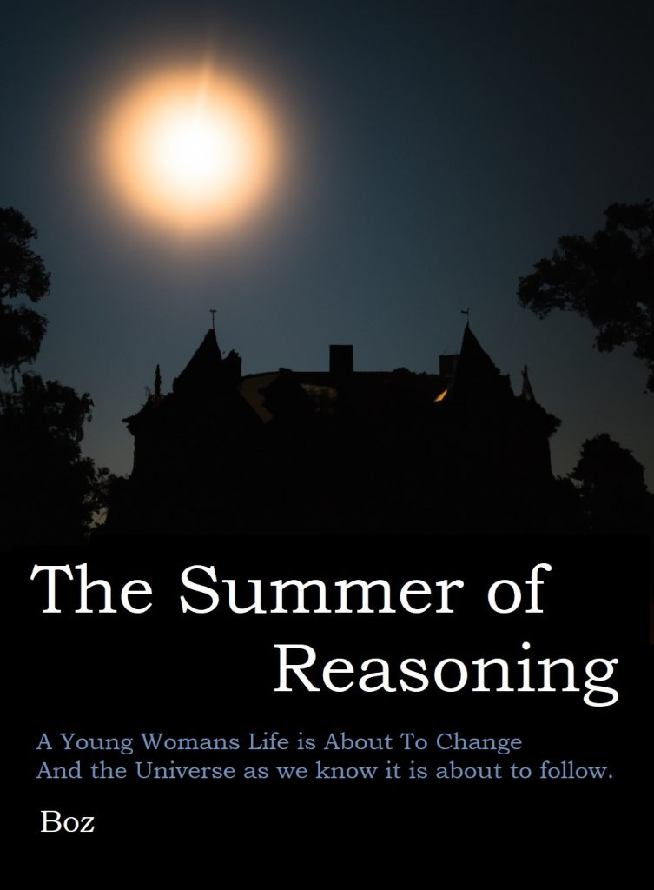

When her genius grandfather dies, a young woman’s simple life is changed immeasurably, going from a humble history scholar to owner of the world’s leading company in AI and energy research and a symbol of hope for millions. The emergence of her company’s sentient AI systems, and science fiction level technologies however do not go unnoticed by world leaders and those behind the scenes pulling their strings, and she and her team find themselves in a race against the corrupt and the powerful to elevate humanity from the sins of its past to a brighter utopian future. However, with this technology and science improving almost daily, there is now another power, infinitely more capable she needs to deal with.
The Summer of Reasoning is a series of three paperback books whose timeline begins in 2025 and follows one optimistic and possible future of the technological singularity for mankind.

The first book in the trilogy, The Phoney War, starts the journey off, introducing the main characters and the plot, it is a lighter and slower paced read than the second two books, mainly concentrating on how everything starts, developing the plot, the characters, the science and the technology for the action in the second two.
The paperbacks can be bought from Amazon (click the pictures above to re-direct) or if dead trees is not your thing then the whole book series is is also available as a single 370,000 word eBook using the links below:
Amazon Kindle – Note Amazon specify a minimum eBook price of $0.99
https://ko-fi.com/s/ab3e74d64d – Gives an option to donate (completely optional)
Or Direct download => The-Summer-of-Reasoning.epub (1.2MB)
You should save the epub file somewhere on your computer, but unless you have an eReader program installed like Calibre, you wont be able to view the book, and will need to transfer it to your eReader manually. For Amazon Kindle you just need to email the file as an attachment to your kindles email address (Send to Kindle instructions). I have also found instructions for the Kobo and the Nook but I am sure one of the many AI’s out there can explain how to do it much better than me.
The Writing Journey

Image Shows Original Cover
This was a really long journey, I think I started writing snippets and chapters for the last ten years, no story getting past ten thousand words before fizzling out or me losing interest. But I finally picked a story (A Sci-Fi story my daughter might optimistically read – Young Adult is the official term), found my mojo and I actually finished and published it as a two-hundred-and-fifty-page amazon eBook in Jan 2022. So, job done, wrote a book, ticked it off the bucket list!
But upon re-reading it, I thought, hmmm, it’s a quaint little story, but it concentrated on the character, science and technological build up, and all the action I wanted to fit in was not there. So barely a month later I removed it from sale.
So, with zero publicity, zero interest and zero sales in the first book, I decided, what the hell lets finish the sequel. The sequel became another 240,000 words and two more books (Singularity and End Game), moving the plot, adding more action, more intrigue, cooler technologies, (AI’s, flying-saucers, robots, wormholes, FTL), some love interests for the girls, etc. I also rounded out the story nicely in the last book with a big climatic space opera ending. So, job done, wrote the sequels, ticked it off the bucket list! But, in a certifiable act of madness, I thought to myself why not actually put the books together; basically ignore all the sensible advice out there and combine them into a single complete novel. My main/only reason for this was that it sort of annoys me when I finish a book only to find out it hasn’t actually finished. I have to buy the sequel, then another, then wait, or in some cases wait forever and hope the author, or I, don’t die before finishing it! So the new book trilogy was big, Game of Thrones big, or 29 hours reading, however, I was happy as it was a complete work, no prequels, no sequels, safe enough for my daughter to read and a plot that progresses like the singularity slowly at first and then exponentially to its climax.
So, to the novel. A bit preachy? maybe. Too girly? maybe. Not girly enough? maybe. No graphic sex or violence, definitely. Rubbish science? Most certainly! In fact, I may have nailed the perfect Venn diagram where women (thinking of my daughter especially here) don’t like it neither do Sci-Fi fans. Funnily enough after several re-reads it still hits all the tropes for me, but I’m weird!
In 2025 we are now back to three separate paperbacks, and a compendium 370,000 word e-book, with the eBook being totally free to download. I have also re-categorised them, changed the covers and simplified the blurb. Hopefully I have now fixed past mistakes and can carry on with writing.
More on the writing journey and tips for new authors.